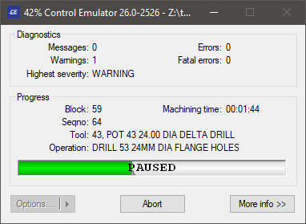

Starting CERUN
This section explains how to start CERUN with Virtual Machine from one of the assorted Manufacturing Extractor utilities, or from the desktop, or from the Windows command prompt.
Starting CERUN from an Extractor
ICAM has developed Manufacturing Extractors that are used to quickly and automatically extract from the CAM system all of the information necessary to perform a complete simulation of an NC program. The information extracted includes:
Tools and their holders
Tool length and tool diameter compensation amounts
Workpiece compensation amounts
One or more finished parts, raw stock and fixtures
Manufacturing Extractors must be run from within the CAM system. Information on how to do so can be found in the Interface Kits on-line help, available from the “ICAM V26 x64” Start menu “Kit Help” entry. As this document went to press, Manufacturing Extractors were available for:
3DEXPERIENCE 2015x–2025x
CATIA V5R21, V5-6R2012–2025
Cimatron 2025
Creo 7-11
FeatureCAM 2017–2025
Fusion 360 2021-2025
GibbsCAM 2024–2026
Mastercam 2019–2025
NX12, 1847, 1872, 1899, 1926, 1953, 1980, 2007, 2206-2412
PowerMill 2021–2025
Information on installation, execution and use of each of the Manufacturing extractors can be found in the Interface Kits on-line help. The extractors work by creating “job files” for both Icam Post GENER and Control Emulator CERUN. When CERUN (or GENER) is subsequently run, the job file can be selected to start control emulation with the CAM system environment duplicated and ready for MCD based emulation (see “The Launch Panel”).
Starting CERUN from the Desktop
CERUN may be started either from the Start menu or from the ICAM Portal.
To start CERUN from the Start menu, first locate the “ICAM V26 x64” Start menu, then select “CeRun V26”. To start CERUN from the portal, select the Products pane and click on the “ICAM Control Emulator NC code simulator” tile or icon. The CERUN launch panel will appear (see “The Launch Panel”).
You may also drag-and-drop an MCD file onto a running portal application or the portal desktop icon. This will start the CERUN launch panel (see “The Launch Panel”) with the dropped file selected for input to the control emulator. Drag an “rpj” file (see “Job Files”) to start the CERUN launch panel with the settings from a previously saved job. Drag a “zrj” file (see “Review Files”) CERUN launch panel in preparation to review the results of a previously run program
Starting CERUN from the Command Prompt
CERUN can be executed from the Windows command prompt by first setting the current working directory to the Control Emulator V26 installation directory (i.e., C:\Program Files\ICAM\V26) and then typing the following command:
\(\textbf{cerun } \; \mathit{file}\textnormal{-}\mathit{name} \;\; \mathit{qualifiers}\)
The cerun command starts CERUN using an interactive launch panel (see “The Launch Panel” for details). The launch panel simplifies the selection of CERUN processing options. It can be suppressed by coding the /quiet command line option.
file-name
Normally only a single MCD file name is required. If a file type for the file name is not specified, a default of “.tap” will be used. When running a multi-kernel control emulator (e.g., for a merging lathe or a composite control emulator), multiple MCD files can be specified if necessary, separated by a semicolon (;).
qualifiers
The command line qualifiers are keyword value pairs separated by an = (equal sign). The qualifier keywords must be preceded with a / (forward slash). The following is an alphabetical list of the supported qualifiers and their usage:
\(\textbf{/back}\)
This qualifier should be used when running CERUN as a background process. This qualifier inhibits writing and prompting to and from the console, as well as the display of the CERUN interface and dialogs. When running in background mode, dialog and console I/O operations will fail with a macro I/O error. A $BACK logical system variable can be tested inside macros to see if user interaction is available.
The background CERUN processing status is available through a tile that will appear in the Progress panel of the Portal. If the portal is not running, then the status will appear as a small progress icon in the system tray on the taskbar. You can right-mouse-button on the tile or icon to either open the full interface or abort the process.
\(\textbf{/ce}\mathtt{=}\mathit{ce}\textnormal{-}\mathit{name}\)
Indicates what QUEST control emulator is to be used to emulate the MCD file. Only one control emulator can be specified for a single execution of CERUN. In the case of a composite control emulator that consists of multiple component control emulators, specify just the composite master control emulator name. If a control emulator is not specified, the user will be prompted for the name.
The control emulator name must match the responses given for the control emulator name and identification number in the “General Information” section in QUEST. It can be specified explicitly in the form:
AAAAAA,NN;VV
where AAAAAA is the 1-32 character case insensitive name of the control emulator. The “,NN” portion specifies the control emulator identification number in the range 1-999999. Omit this for control emulators that do not have an identification number. The “;VV” portion can be used to specify a particular revision of the control emulator to use. If omitted, the most recent revision will be used. For example, if the control emulator was saved in QUEST under the name “MYCE,3”, then specify the control emulator name as follows:
/ce=myce,3
CERUN cannot run a control emulator that has been created with a version of QUEST that is higher than the CERUN version.
\(\textbf{/dbf}\mathtt{=}\mathit{file}\textnormal{-}\mathit{name}\)
Specifies the database file name. By default, the database is named campost.dbf and resides in the work subdirectory of the icam_appdata directory (see “Configuration Storage and Application Data”). The icam_dbf environment variable can also be used to define the database.
\(\textbf{/def}\mathtt{=}\mathit{file}\textnormal{-}\mathit{name}\)
Specifies which definition file to use. By default, the definition file is named ICAM.DEF and resides in the icam_appdata directory. If a directory path is not specified with the file name, then CERUN will search for the file as described here.
\(\textbf{/ef}\mathtt{=}\mathit{file}\textnormal{-}\mathit{name}\)
Specifies that a log file is required. If a file name is not specified, a file having the same name as the MCD file with a file type of log is created. The log file contains the same information as the first page of the listing file (identifying the software version, input data and licensing) as well as the same summary sections found in the listing file.
\(\textbf{/job}\mathtt{=}\mathit{file}\textnormal{-}\mathit{name}\)
Specifies the name of a job file containing command line parameters and qualifiers that have been either saved from a previous post-processing or control emulation job or that have been created by an ICAM Manufacturing Extractor. This qualifier can also be used to specify a review file containing results saved from a previous post-processing or control emulation job.
\(\begin{array}{l} \rule{0pt}{2.5ex} \textbf{/list}\mathtt{=}\mathit{file}\textnormal{-}\mathit{name} \\ \rule{0pt}{2.5ex} \textbf{/nolist} \end{array}\)
Specifies the control emulator verification listing file. By default, the listing is written to a file having the same name as the MCD file with a file type of lce. /nolist disables the generation of a listing file. If the listing is disabled, a log file (see the /ef qualifier above) will be generated.
\(\textbf{/mdldbf}\mathtt{=}\mathit{file}\textnormal{-}\mathit{name}\)
Specifies the database file name that contains the Virtual Machine model definition. If this qualifier is not specified, the model will be read from the same database as the control emulator. This qualifier is only valid with a Virtual Machine (vmr260) license.
\(\begin{array}{l} \rule{0pt}{2.5ex} \textbf{/model}\mathtt{=}\mathit{model}\textnormal{-}\mathit{name} \\ \rule{0pt}{2.5ex} \textbf{/nomodel} \hspace{2in} {\small \textnormal{(default)}} \end{array}\)
Specifies the name of the Virtual Machine model to be used during control emulation. Model naming conventions are the same as control emulator naming conventions (see the /ce qualifier description above). If the model name is omitted, the default model associated with the control emulator (if any) will be used. Specify /nomodel to inhibit Virtual Machine processing. This qualifier is only valid with a Virtual Machine (vmr260) license.
\(\begin{array}{l} \rule{0pt}{2.5ex} \textbf{/mrs} \\ \rule{0pt}{2.5ex} \textbf{/nomrs} \hspace{2.2in} {\small \textnormal{(default)}} \end{array}\)
Enables or disables the use of MRS (material removal simulation) during control emulation. MRS requires an xmr260* license option. MRS can be used by itself to simulate just the cutting actions of the tool vs. stock, or it can be used with a Virtual Machine model for a complete simulation.
\(\textbf{/quiet}\)
This qualifier suppresses the startup launch panel, which is used to interactively add or modify control emulation options. It also suppresses any final completion status message box. Use this qualifier when submitting a control emulation job for background or batch type processing.
\(\textbf{/save}\)
Saves the final results of the program into a file having the same name as the listing, with a file extension of zrj. The program results can be later reviewed by dropping the zrj file onto the CERUN launch panel, or by selecting the zrj file using the launch panel JOB button.
\(\textbf{/trace}\big[\mathtt{=}\mathit{trace}\textnormal{-}\mathit{options}\,\big]\)
Controls whether CERUN should output tracing information to the listing file as an aid to understanding the processing flow. One or more of the following letters can be specified for the trace options (see “The Trace in Listing Checkboxes” for descriptions of these trace options):
IInput blocks (MCD) E Edited blocksWWord addressesCCODE and DATA identifiers A ActionsMCODE and DATA macros H Other macrosSOperator and other messagesXMDI and EXEC commandsZInternal //icamfs subprogramsThe input MCD and diagnostic messages are always traced to the listing file. MCD is traced by default using the format “line-number! mcd”. Specify the I trace option to instead trace MCD using the format “Block: mcd”.
\(\textbf{/u} \, \big[ \, \mathit{user}\textnormal{-}\mathit{input}\textnormal{-}\mathit{options} \,\big] \, \textbf{/nu}\)
This option allows the user to input one or more variables into the program directly from the CERUN command line. These variables can then be parsed or retrieved with other macro system variables when needed during the execution of the program. The /nu indicates the end of the user command and can be omitted if the user input options are at the end of the command line.
/verbose[=option]
If specified, CERUN will output information to the interactive multi-panel window display (see “Using CERUN with Virtual Machine”). One or both of the following letters can be specified for additional trace options:
FDisplay full interface (the default)PDisplay progress dialog
\(\textbf{/vsw}\mathtt{=}\mathit{file}\textnormal{-}\mathit{name}\)
Optionally specifies the name of the verification setup (.vsw) file. On startup, Virtual Machine reads the setup file to obtain tooling, part, stock, fixture, compensation, lighting adjustments, and a variety of other settings. On exit, VM saves this information back to the setup file. By default, the setup file has the same name as the input file with a file type of “.vsw”. The setup file need not exist.
\(\textbf{/words}\mathtt{=}\mathit{file}\textnormal{-}\mathit{name}\)
If specified, CERUN will use the words list supplied. The words list defines Major and Minor words and their associated codes. This list can be created and modified from the QUEST Tools»Words Manager menu-bar selection. By default, CERUN uses the words defined in a file named dwords.dat in the icam_appdata directory.
This qualifier will override the words symbol if specified in the ICAM.DEF file.
Starting PSE from a Command Prompt
GENER (the ICAM post-processor) and CERUN can be run together (i.e., in parallel) so that as each block of NC code is created by GENER, it is then immediately processed by CERUN. Also, if enabled, the Virtual Machine simulation windows will show and diagnose the collisions and over-travels resulting from the CERUN simulation. This combination of post-processing, machine simulation and control emulation is called PSE.
PSE can be executed from the Windows command prompt by typing the following command:
\(\textbf{pse } \; \mathit{file}\textnormal{-}\mathit{name} \;\; \mathit{qualifiers}\)
The pse command starts the combined process using an interactive launch panel (see “The Launch Panel” for details of CERUN options; see the Icam Post User Guide for information on GENER command line options). The launch panel simplifies the selection of GENER, CERUN and VM processing options. It can be suppressed by coding the /quiet command line option.
file-name
Specifies the GENER input CL file name. CERUN automatically inputs the MCD files created by GENER.
qualifiers
The command line qualifiers are keyword value pairs separated by an = (equal sign). The qualifier keywords must be preceded with a / (forward slash). The pse command accepts all of the command line qualifiers that available for GENER and CERUN, with the following exceptions:
\(\begin{array}{l} \rule{0pt}{2.5ex} \textbf{/ppdbf}\mathtt{=}\mathit{file}\textnormal{-}\mathit{name} \hspace{1.46in} {\small \textnormal{GENER}} \\ \rule{0pt}{2.5ex} \textbf{/cedbf}\mathtt{=}\mathit{file}\textnormal{-}\mathit{name} \hspace{1.5in} {\small \textnormal{CERUN}} \end{array}\)
Specifies the database file names for the post-processor and control emulator, replacing the /dbf qualifier.
\(\begin{array}{l} \rule{0pt}{2.5ex} \textbf{/ppef}\big[\mathtt{=}\mathit{file}\textnormal{-}\mathit{name}\,\big] \hspace{1.41in} {\small \textnormal{GENER}} \\ \rule{0pt}{2.5ex} \textbf{/ceef}\big[\mathtt{=}\mathit{file}\textnormal{-}\mathit{name}\,\big] \hspace{1.45in} {\small \textnormal{CERUN}} \end{array}\)
Specifies the name of the GENER and CERUN alternate summary files, replacing the /ef qualifier.
\(\begin{array}{l} \rule{0pt}{2.5ex} \textbf{/pplist}\mathtt{=}\mathit{file}\textnormal{-}\mathit{name} \hspace{1.49in} {\small \textnormal{GENER}} \\ \rule{0pt}{2.5ex} \textbf{/nopplist} \\ \rule{0pt}{2.5ex} \textbf{/celist}\mathtt{=}\mathit{file}\textnormal{-}\mathit{name} \hspace{1.53in} {\small \textnormal{CERUN}} \\ \rule{0pt}{2.5ex} \textbf{/nocelist} \end{array}\)
Specifies the name of the GENER and CERUN listing files, replacing the /list and /nolist qualifiers.
\(\begin{array}{l} \rule{0pt}{2.5ex} \textbf{/pptrace}\big[\mathtt{=}\mathit{trace}\textnormal{-}\mathit{options}\,\big] \hspace{0.87in} {\small \textnormal{GENER}} \\ \rule{0pt}{2.5ex} \textbf{/cetrace}\big[\mathtt{=}\mathit{trace}\textnormal{-}\mathit{options}\,\big] \hspace{0.91in} {\small \textnormal{CERUN}} \end{array}\)
Specifies the GENER and CERUN listing file trace options, replacing the /trace qualifier.
CERUN Return Codes
CERUN returns a status code, called a “return code”, to the calling process. This information can be used in a shell script, batch file or other program to determine a follow-on action. Return codes are as follows:
Code
Description
–1
Unexpected failure
0 thru 3
Success. Process completed with informational messages only.
4 thru 7
Caution. Process completed with warning messages.
8 thru 15
Failed. Process completed with errors.
16 thru 99
Fatal. Process completed or terminated with fatal errors.
100
Command line parsing error.
101
License problem. Key not found or corrupted; or PRISER missing.
102
Unexpected license problem during QUEST test.
105
Unable to open job file.
106
Listing file could not be created.
200
MCD file not found.
201
CE database not found or readable; or CE not found or readable.
202
Model database not found or readable; or model not found or readable.
203
Not licensed to use selected CE.
204
Not licensed to use selected model.
207
Dynamic Virtual Machine model could not be created.
All errors will appear in the log file if one is requested and provided that it can be created.
100 series errors will not appear in the CERUN listing, because these problems cause CERUN to abort before the listing file has been created.
200 series errors will appear in the CERUN listing. As with 100 series errors, CERUN processing will abort after the diagnostic is output.
Errors that cause CERUN to abort (i.e., 100 and higher) will be displayed on the screen in a message box window, unless both the background and quiet processing options have been specified. The CERUN launch panel will be reactivated (unless the quiet processing option was specified) to allow for appropriate corrections before running the program again.
The Launch Panel
The launch panel provides a simple and interactive method of selecting the appropriate set of CERUN processing options. The launch panel remembers the last settings used and saves this information in the Windows Registry. Remembered settings can be recalled via the drop-down lists that appear beside most launch panel input fields.
When CERUN is started, the launch panel will appear as shown below:
{kind=link}
Launch Panel
Processing
This setting defines the type of processing desired. Choices are as follows:
- GENER:
Run the post-processor
- CERUN:
Run the control emulator
- PSE:
Run the post-processor and control emulator together
- REVIEW:
Review results of a previously saved job
Select the GENER option to post-process a CL file to MCD code. This function is described in the Icam Post User Guide.
Select the CERUN option to use the ICAM Control Emulator to process the contents of an MCD file, simulating the manufacturing environment using Virtual Machine.
Select the PSE option to start execution of GENER and CERUN together, along with a Virtual Machine simulation.
The REVIEW selection is only available after selecting a zrj review file using the JOB button or after dropping a zrj file on the launch panel. This reviews the results of a previously run job.
Interface
CERUN can run hidden as a background process or interactively as a foreground process.
Select Background to run as a background process. When in background mode, CERUN will inhibit I/O operations to the console and will also inhibit the display of dialog boxes. This will ensure uninterrupted control emulation.
Select Full to run CERUN with a interactive interface that can be used to view and debug the actions of the control emulator. With Full mode, CERUN can show the interaction between input MCD, the motions of the Virtual Machine model and the stock material removal process using a variety of tracing and debugging features. CERUN starts in a paused state when running in Full mode; use the Run menu or toolbar shortcuts to start control emulation. See “Using CERUN with Virtual Machine” for more information on the full-mode display.
Select Progress to run CERUN with only a simple progress bar visible on the desktop. When running with the progress bar, you can switch to the full display by pressing the “More info” button. When processing has completed, you can select the “Options” button, which allows you to:
view the verification listing file
create a “packaged job” file suitable for e-mailing to ICAM Technical Support
Select Minimize to run CERUN in the background. When running in this mode, no information is given about the execution progress. The less information CERUN is asked to display, the faster execution will be. At any time you can restore the window to view the progress state, and from there, switch to a full display.
When CERUN is started in Back, Progress or Minimize modes, the Trace windows will not be enabled unless “Save for review” is enabled. This is done to speed up processing, since generating and recording trace information consumes CPU and memory resources. To enable tracing from the start of processing, run in Full mode and select Run»Fast (F8).
ICAM recommends that Background or Minimize mode be used when using CERUN in a production mode, since the CPU requirements are reduced.
{kind=link}
Merged PSE Processing
This checkbox is available for PSE processing. If selected, GENER and CERUN will run in parallel, with the MCD output of GENER being immediately input and simulated by CERUN. PSE processing runs in series if this checkbox is not selected. Once GENER reaches the end of post-processing, CERUN will then simulate the generated MCD.
Center tab selections
There are separate tabs for GENER, CERUN, Virtual Machine and user preferences. Availability of these tabs are controlled by licensing and the processing selection choice.
GENER specifies post-processing options (see the Icam Post User Guide)
CERUN: specifies control emulation options (see “CERUN Tab”)
VM: specifies simulation options (see “VM Tab”)
Preferences: specifies personal prevalences (see “Preferences Tab”)
DEF file
This field specifies the DEF file to use. By default, the definition file is named ICAM.DEF and is stored in the application data directory (see “Configuration Storage and Application Data”). You can browse for a specific DEF file using the […] button.
OK, Cancel and other buttons
Press the OK button to start the control emulator. CERUN requires the MCD file name, the database and the control emulator name before it can proceed. Everything else is optional.
Press Cancel to quit the launch panel without running CERUN (changed settings are not remembered in the Windows Registry when Cancel is pressed).
There are other buttons and tabs on the launch panel, that are each described in greater detail further on in this manual. The buttons are:
DB Manager: to perform database management (see “DB Manager”)
JOB: to save/recall launch panel settings (see “JOB Button”)
CERUN Tab
The CERUN tab is used to select the input MCD (NC program) to be processed, along with the control emulator as well as various control emulation options.
CERUN Tab
MCD File
This input field is used to enter the MCD (i.e., NC program) file name, either by typing it in (you must include the full directory path), or by using the square browse button […] located immediately to the right of the input field, or by dragging and dropping an MCD file onto the launch panel window. The last four file selections are remembered. They can be re-accessed by selecting them from the drop-down list. The browse tape file panel remembers the last directory browsed for a tape file.
When running a multi-kernel control emulator (e.g., for a merging lathe or a composite control emulator), an Add button will be shown instead of the […] button, to allow multiple MCD files to be specified if necessary. Multiple file names are separated by a semicolon (;). When dragging and dropping multiple MCD files onto the launch panel window, select the MCD files in the reverse order that they are needed (this is a Windows idiosyncrasy).
Database
This input field is used to select the database that contains the control emulator to use. You can browse for a database using the square browse button […] located immediately to the right of the text window, or you can drag and drop a database (dbf, dmp or dp) file onto the launch panel window. The last four database selections are remembered. They can be re-accessed by selecting them from the drop-down list. The browse database panel remembers the last directory browsed for a database, unless the icam_dbf environment variable is set (see “Environment Variables”).
Control Emulator (CE) and Revision (Rev)
Use these input fields to choose a control emulator from the selected database. The control emulator drop-down presents a list of generated and dedicated control emulators (i.e., it shows only those control emulators from the database that can be used by CERUN). The revision field lists the latest revision of the selected control emulator and the drop-down lists other generated revisions, if any. Information about the selected control emulator will appear in the Description box.
CERUN cannot run a CE created with a version of QUEST that is higher than the current version.
Include PP
Select this checkbox to include post-processors as well as control emulators in the CE selection list. CERUN can use the questionnaire information from a post-processor when emulating a CNC machine. This produces the same results as would be obtained by creating a control emulator as a link or copy of an existing post-processor and then generating without customization.
User parameters
Use this field to pass user defined parameters to the control emulator. Some control emulators alter their behavior based on user-defined parameter data. Anything typed in this input field will be passed to the control emulator as a user-defined parameter in the $UPARAM macro variable.
Optional Skip
Use these input fields to specify a starting condition for the optional skip (also called “block delete”) settings. Use the ON and OFF radio buttons to select the starting setting for those CNC’s that support a single on/off form of optional skip. For CNC’s that support multiple levels of optional skip, ON selects the default optional skip level and Multiple allows a comma or blank separated list of opskip levels to be specified.
Options Button
Select the Options button to specify output options (see the “Options Dialog”).
VM Tab
The VM tab is used to associate a Virtual Machine model with the selected control emulator and/ or to perform material removal simulation on the stock model.
Integrated control emulation with machine model simulation is a feature of the Virtual Machine product from ICAM, available as a separately licensed vmr260 product. Integrated control emulation with material removal simulation is available as a separately licensed xmr260 product. The VM tab will only be available if at least one of these licenses are present.
{kind=link}
VM Tab
Enable Material Removal Simulation
Select this checkbox to enable the simulation of the material removal process with respect to the stock model. Material removal simulation (MRS) shows the effect of the cutting action of the tool on the stock model. MRS also improves the collision detection process when used with a model (see below), using the in-process stock for collision testing. If this checkbox is not checked, it will not be possible to start MRS once the program has started.
MRS is an add-on licensed option to VM. This checkbox will only be available for selection if you have an xmr260 product license.
Enable Virtual Machine Simulation
Select this checkbox to enable the simulation of the CNC machine using a Virtual Machine model. Machine simulation shows the effect at the CNC machine as the MCD is read and also provides axes over-travel checking and collision detection. If this box is not checked, it will not be possible to start machine simulation once the program has started.
This checkbox will only be available for selection if you have a vmr260 product license.
Database
This input field is used to select the database that contains the model to use. You can browse for a database using the square browse button […] located immediately to the right of the text window, or you can drag and drop a database (dbf, dmp or dp) file onto the launch panel Simulation tab. The last four database selections are remembered. They can be re-accessed by selecting them from the drop-down list. The browse database panel remembers the last directory browsed for a database, unless the icam_dbf environment variable is set (see “Environment Variables”).
Model and Revision (Rev)
Use these input fields to choose a model from the selected database. The model drop-down presents a list of all models in the selected database. The revision field lists the latest revision of the selected model and the drop-down lists other revisions, if any. Information about the selected model will appear below the input field.
One of the available model choices is “Use associated”, which when selected will use the model associated with the selected control emulator (CERUN or PSE processing) or post-processor (GENER processing). You cannot choose a specific revision of a model that is selected by association.
CERUN cannot run a model created with a version of QUEST that is higher than the CERUN version.
Verification setup file
This file contains part program specific setup information such as tooling, part, stock, fixture, compensation, lighting adjustments and a variety of other settings unique to each NC program. This field is automatically set to the same name as the MCD file, with a file extension of “.vsw”. You can change the name for a single execution of the control emulator; either by typing a file name, using the […] browse button or dragging a dropping a vsw file into the launch panel Simulation tab, but the settings will not be remembered the next time CERUN is launched.
A verification setup file that has been created with GENER during post processing can later be reused by CERUN during MCD verification and vice versa.
Preferences Tab
The Preferences tab provides settings that affect how the launch panel and software behaves. These personal preference settings do not affect how MCD is simulated.
{kind=link}
Preferences Tab
Enable launch panel tooltip help
Enables the display of tooltip help messages when the cursor is placed over an input field in the launch panel.
Use common browse directory
If selected, all launch panel […] browse functions will start from the last directory browsed. When cleared, each launch panel […] browse button will remember and start from the last directory browsed for its own specific file type.
Detect new/updated files on launch
If selected, the launch panel will notify you when dmp or dp files (exported or dedicated post-processors, control emulators and models) are added to or changed in the last directory used to Import such files into the database (see “DB Manager”). The launch panel checks for dmp and dp files more recent than the date of the last import.
Save for review
If selected, GENER and CERUN will save their results at the end of processing into a file having the same name as the listing, but with a file type of zrj (see “Output Review File”). To review an NC program’s results, drag and drop the zrj file onto the launch panel or desktop icon (or open the results using the JOB button), then press OK.
Options Dialog
The Options button on the CERUN panel is only available for selection once an MCD file has been chosen. The following options dialog will appear when the Options button is pressed:
{kind=link}
CERUN Options Dialog
Listing file
When checked (the default), a listing file will be created containing identification information about the NC program being emulated and the control emulator and model used in the simulation, as well as diagnostic and tracing information, followed finally by a program summary. The default listing file has the same name as the MCD file with a file type of lce. You can change the listing file name for a single execution of the control emulator, but the settings will not be remembered the next time CERUN is launched.
Log file
When checked, a log file will be created containing the same information as the listing file (as described above) with the exception of tracing information. The default log file has the same name as the MCD file with a file type of log. You can change the log file name for a single execution of the control emulator, but the settings will not be remembered the next time CERUN is launched. The log file output cannot be disabled when the listing output is disabled.
The Trace in Listing Checkboxes
Enables the tracing of various types of data to the listing file. Tracing is not output to the log file.
Input blocks (MCD): If selected, machine control data (i.e., tape) blocks will be shown in the listing file in the form “Block: mcd”. This disables the default “line-number! mcd” tracing of MCD in the listing file.
Edited blocks: If selected, the resultant MCD after edits by various initial processes are shown, in the form “process: edited-mcd”, where process is one of:
TapEdt: for changes done by the Tape Editor
DelOn: for changes done due to OPSKIP (i.e., block delete) being active
DelOff: for changes done due to OPSKIP being inactive
PrePrc: for changes done by the Pre-Processor
EmbMac: for changes done by the Embedded Macro Processor
BlkMac: for changes done by the Block Macro
Word addresses: If selected, the individual word addresses (i.e., registers) on the MCD block will be listed, one per line, in the form “register: value”.
CODE and DATA identifiers: If selected, the individual CODE and DATA identifiers will be listed, one per line, in the form “code_name” and “reg_name”, as they are processed.
Actions: If selected, the final actions taken by the control emulator will be listed, one per line, in the form “| description”.
Code and Data macros: If selected, macro commands originating from the control emulator CODE and DATA macros will be shown in the listing file as they are processed.
Other macros: If selected, macro commands originating from all other macros (i.e., Startup, Shutdown, Event and Function) will be shown in the listing file as they are processed.
Operator and other messages: If selected, operator messages will be echoed to the listing file.
MDI and EXEC commands: If selected, MDI (manual data input) and macro EXEC commands will be traced to the listing, in the form “mid! mcd” or “exec: command-parameters”.
Internal //icamfs subprograms: If selected, subprograms that are run from the internal //icamfs storage area will be traced to the listing. If internal subprograms are not traced, then all other tracing is inhibited while processing internal subprograms, with the exception of Actions.
OK, Cancel and Reset buttons
Press OK to accept any changes to the Options panel and return to the main launch panel. Press Cancel to ignore your changes and return to the main launch panel. Press Reset to remove all specialized settings and reset the file names and trace options to their defaults.
DB Manager
The DB Manager button can be used to perform routine maintenance activities on ICAM databases. All of the functions available with the QUEST Database Navigator (see “The Database Navigator”) are also available from the DB Manager dialog. These include, for example, the ability to import, rename, copy and delete control emulators, as well as the ability to create new databases and move or copy control emulators between them. The database manager can also be used to add or remove password protection on a database.
The following panel will appear when the DB Manager button is pressed. The upper half of the DB Manager dialog lists the databases in the same way as the QUEST database navigator; the lower half logs the status of any changes.
{kind=link}
Database Manager Panel
One of the most important functions of the DB Manager is to import into the database Icam Post post-processors, Virtual Machine models and Control Emulators that have been provided to you in an “export” format. Select the production database, press the right-mouse button, and then choose Import from the pop-up context menu. You can use the Import feature to load dedicated posts, models and control emulators (files with a dp file extension), exported posts, models and control emulators (files with a dmp file extension) and even the content of entire databases (files with dbf file extension) into the selected database.
The Import panel includes a “Detect new/updated files on the next run” checkbox that, if selected, will notify you when exported files are added to or changed in the last directory used by the Import feature. This test is performed each time the launch panel is run. It checks for exported files more recent than the date of the last import.